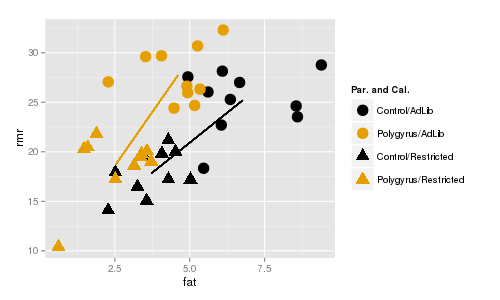

Post-hoc analysis refers to the comparisons we make after a statistically significant omnibus test. MANOVA with more than two groups produces an omnibus test that could be significant with as little as one pair of group means that are different on as few as one response variable, or as many as every group means on every response variable - we need post-hoc comparisons to tell us which they are. This is usually done with pairwise comparisons - that is, comparisons between two groups at a time (not to be confused with paired comparisons, which are used on paired data).
The post-hoc procedure you are most familiar with, Tukey tests, ensures that the chances of false positives are maintained at the α-level of our choosing (usually α = 0.05). Tukey tests don't work with multivariate analysis, however, so we need to adopt a different pairwise comparison procedure.
Following a significant MANOVA, we have two different levels of post-hoc procedures to do:
The example we use will be the parasitized mouse experiment we saw in lecture (contributed by my lovely and talented wife, Dr. Deborah Kristan, who is the superior Kristan at CSUSM). In this experiment mice were either experimentally infected with Heligmosomoides bakeri (called H. polygyrus when the data were collected, the name has since been changed) or not, and were either given ad libitum access to food, or were calorically restricted. As is typical of these sorts of whole-animal physiological studies, a large number of anatomical and physiological variables were measured as responses, but we will work with four of them: resting metabolic rate (rmr), fat mass (fat), large intestine weight (li), and small intestine weight (si).
In a factorial design all combinations of both of the predictors are used, ideally with equal numbers of cases in each combination of treatments. This type of design makes the effects of the predictors independent of one another (that is, they are orthogonal), which allows us to measure how they affect the response variables individually and in tandem. Their joint effects are measured by the interaction term, and if it is statistically significant we conclude that the effect of one predictor (caloric treatment) depends on the level of the other (parasite treatment). We then need to compare combinations of the two predictors against one another, rather than looking at the main effects of each separately from the other.
We will have four combinations of parasite and caloric treatments to compare, so we will have 6 multivariate pairwise tests, and 6 more per response variable in each analysis (of which there will be two) for another 12. The post-hoc analysis we do will generate a lot of p-values, with lots of opportunities for false positive errors.
We will prevent this large number of comparisons from causing excessive false positives by adjusting the α-level we use for each post-hoc comparison - if we make two comparisons, and only consider them to be significant if the p-value is less than 0.05/2 = 0.025, then between the two tests we have no more than a probability of 0.05 of one or both of them being a false positive. This Bonerroni correction is a simple method of preventing multiple comparisons from producing excessive Type I errors.
We will also learn to fit models with interactions, how to interpret them when they are significant, and how to do post-hoc comparisons on predictors that interact with one another.
As you learned in lecture, an interaction between two predictor variables means that response to one predictor variable (like caloric treatment, with levels of ad lib or restricted) depends on another (like parasite treatment, with levels polygyrus or control).
Let's start by looking at one variable at a time. If we used RMR as a response variable, both caloric treatment and parasite treatment as predictors we would get this ANOVA table:
Df Sum Sq Mean Sq F value Pr(>F)
parasite.treatment
1 29.1 29.1 3.628 0.0648 .
caloric.treatment
1 669.8 669.8 83.554 6.47e-11 ***
parasite.treatment:caloric.treatment 1 6.9 6.9
0.859 0.3602
Residuals
36 288.6 8.0
The interaction (labeled as parasite.treatment:caloric.treatment) is not significant, so we can interpret the effects of each treatment separately, without worrying about combinations of the two. There is a significant main effect of caloric.treatment and a nearly significant main effect of parasite.treatment. Why is there no interaction, and why is only caloric treatment statistically significant?
The top graph to the right shows how RMR (y axis) is affected by caloric treatment (x axis), in combination with parasite treatment (color) - the dots are means for each combination of parasite treatment and caloric treatment. This is called an interaction plot, because it is used to detect and interpret interactions between variables. You can see that the amount of difference in RMR due to polygyrus infection is about the same regardless of whether the animals are fed ad lib, or are calorically restricted. Because of this, the lines are nearly parallel on the plot.
The next plot below shows fat mass on the y-axis, and the lines are nearly parallel for fat as well.
We interpret this to mean that response to parasites doesn't depend on caloric restriction. Given that, you can base your interpretations on main effects of parasite and caloric treatments, using the marginal means. If you click once on either graph it will put the marginal means for the caloric treatments onto the graphs as red diamonds - the marginal means are in between the control and polygyrus means above each of the caloric treatment labels because they are averaging all of the data for each caloric treatment irrespective of parasite treatment. The amount of difference between the two red diamonds is about the same as the amount of difference between the two gold dots or the two black dots because the lines are nearly parallel, and the effect of caloric treatment doesn't depend on parasite treatment.
Click once more and you'll see the marginal means for parasite treatment plotted as diamonds that are the same colors as the parasite treatments. This time we're averaging over all of the data in each parasite treatment irrespective of the caloric treatment, so the diamonds are placed on the lines between the dots for the group they belong to. The amount of difference between the black and gold diamonds is about the same as between the black and gold diamonds above the ad lib caloric treatment, and between the black and gold diamonds above the restricted caloric treatment because the lines are nearly parallel - response to parasites doesn't depend on caloric treatment, and we can interpret the parasite effect without needing to consider the caloric treatment used.
Compare the example of fat and RMR to what we see when we look at large intestine. The ANOVA table is:
Df Sum Sq Mean Sq F value Pr(>F)
parasite.treatment
1 0.0000233 0.0000233 0.385 0.538737
caloric.treatment
1 0.0002804 0.0002804 4.644 0.037926 *
parasite.treatment:caloric.treatment 1 0.0009054 0.0009054 14.996 0.000437 ***
Residuals
36 0.0021734 0.0000604
Now the interaction between parasite.treatment and caloric.treatment is significant, which tells us that the response to parasite treatment depends on the caloric treatment. There is still a main effect of caloric treatment, but the presence of an interaction can make main effects misleading.
We can see why if we plot large intestine (top) or small intestine (bottom) masses, you'll see that the lines are parallel for small intestine but they cross for large intestine. Crossing lines are particularly clear examples of an interaction - control animals have lower large intestine weights than polygyrus animals if they are fed ad lib, but if they are calorically restricted the pattern reverses, such that when we connect the dots for the two parasite treatments the lines cross.
With a case like this it's no longer safe to base your interpretation on marginal means - if you click through to see the marginal means you'll see that there is almost no effect of parasite treatment if you ignore caloric treatment, but the combinations of caloric treatment and parasite treatment differ a lot. Now that the response you get to caloric treatment depends on the parasite treatment, we have to make comparisons between the means for combinations of caloric treatment and parasite treatment - that is, we have to compare each dot on the graph, rather than between the diamonds that only look at one of the treatments at a time.
In contrast, si doesn't show the same pattern - the lines are nearly parallel and we wouldn't expect a significant interaction for si alone.
Interactions in multivariate data have the same interpretation as in univariate data, but with more than one response variable we have trouble visualizing what an interaction would look like using a two dimensional graph. If we look at RMR and fat mass at the same time, we need the y axis for one response variable and the x-axis for the other. We can still use color to indicate parasite treatment, but now we'll indicate caloric treatment using plot symbols instead - circles are mice fed ad lib, and triangles are mice that were calorically restricted.
The line segments connect the centroids for ad lib and restricted mice. Color indicates parasite treatment (gold = polygyrus, black = control), and symbol indicates caloric treatment (circle = ad lib, triangle = restricted).
The lines are about the same length (indicating roughly the same amount of difference between the caloric treatments for each parasite treatment), and are roughly parallel (indicating that the direction of change in fat and rmr is the same for the caloric treatments regardless of the parasite treatment). If you click once the centroids for the caloric groups, ignoring parasite group, appear and you'll see that the distance between them is about the same as between the black circle and black triangle or between the gold circle and gold triangle. Click again and the centroids for the two parasite groups ignoring the caloric treatments are placed on the lines, and the distance between them is about the same as the two circles or between the two triangles. Since the lines are nearly parallel we only expect main effects to be significant, but not the interaction between parasite and caloric treatments.
In contrast, there is a significant interaction between caloric treatment and parasite treatment on small intestine and large intestine weights. You can see that the lines are different in length, which shows that the amount of difference between caloric treatments differs for polygyrus and control groups. Additionally, the line segments are pointed in very different directions, so the direction of change in response to caloric treatment isn't even the same for the two different parasite treatment groups. If you click once the red diamonds show the centroids for the two different caloric groups ignoring parasite treatment, and the amount of distance between the diamonds is not the same as between the black and gold triangles or between the black and gold circles. Click again and the centroids for the two different parasite groups appear, ignoring caloric treatment, and the distance between the diamonds is not the same as between the two circles or the two triangles. The lines don't cross, but crossing isn't required for an interaction, just lack of parallel.
1. Start a new project for today. The Rmd file is here, download it and put it in your project folder. The data are in worksheet "mouse" of this file (called mouse.xlsx). Import it into a data frame called mouse (chunk import.mouse.data).
If you open the mouse dataset you'll see the columns:
Putting each of the two treatments in separate columns allows us to test their main effects and interactions in our model. If you scan through the rows of data, you'll see that every combination of caloric.treatment and parasite.treatment appears, in equal numbers - there are 10 mice fed ad lib and used as controls, 10 fed ad lib and given H. polygyrus, 10 animals calorically restricted and used as controls, and 10 animals calorically restriced and given H. polygyrus.
2. Before we do any analysis, we should graph the data and look at the patterns.
We will want to use the combinations of caloric.treatment and parasite.treatment for graphing - there is a command in R for combining the levels of two factors into one, called interaction(). Use the command (make.combinations chunk):
mouse$parasite.caloric <- with(mouse, interaction(parasite.treatment, caloric.treatment))
If you look at the data again you'll see there is now a column called parasite.caloric that has the combinations of the two different experimental treatments, separated with a period.
First, we will plot the fat and rmr variables in a scatter plot. Load the ggplot2 library (load.ggplot2 chunk):
library(ggplot2)
We're still pretty new to ggplot2, so let's build up to the final command. First, you need the ggplot() command to identify the data set (mouse), and assign aesthetic mappings for he x-axis variable (fat) and the y-axis variable (rmr). Use the command (in the Console):
ggplot(mouse, aes(x = fat, y = rmr))
You will see an empty graph with fat on the x-axis and rmr on the y-axis.
We would like to see some points on the plot, so edit your command by putting a + after the ggplot() command, and adding a geom_point() statement (in the Console):
ggplot(mouse, aes(x = fat, y = rmr)) + geom_point()
You should now see a scatterplot of the two variables. This is fine, but we have grouped data, and we would like to be able to tell which points are from which groups. We can color code by the combinations of parasite and caloric treatment (in the Console):
ggplot(mouse, aes(x = fat, y = rmr, color = parasite.caloric)) + geom_point()
You should now have points that are colored by their parasite.caloric treatment groups.
We would also use different plot symbols for the treatments, so we can set the plot symbol based on caloric.treatment (still in the Console):
ggplot(mouse, aes(x = fat, y = rmr, color = parasite.caloric, shape = parasite.caloric)) + geom_point()
This is okay, except that every different combination of parasite.caloric has a different color and symbol, and we can't really tell that we have two different treatment variables here - it would be nice to color by parasite treatment so that both controls are the same color, and both polygyrus treatments are the same color. If you look at the legend, controls are the first and third entries, and polygyrus are the second and fourth. We can change the colors manually to reflect that the first and third group are control, and the second and fourth are polygyrus, using scale_color_manual():
ggplot(mouse, aes(x = fat, y = rmr, color = parasite.caloric, shape = parasite.caloric)) + geom_point() + scale_color_manual(values = c("red","black","red","black"))
Control animals are now assigned red, Polygyrus animals are assigned black. We can use the same trick with shape to indicate that the first two are ad-lib groups, and the second two are restricted:
ggplot(mouse, aes(x = fat, y = rmr, color = parasite.caloric, shape = parasite.caloric)) + geom_point() + scale_color_manual(values = c("red","black","red","black")) + scale_shape_manual(values = c(16,16,17,17))
This gives you the ability to compare between control and polygyrus by comparing the different colors, or between ad lib and restricted by comparing between circle and triangle points.
Lastly, the points look a little small. Inside the geom_point() statement you can increase the size of the points - the numbers are relative, with the default equal to 1, so we'll try using a size of 3 (put this last command in chunk fat.rmr.ggplot):
ggplot(mouse, aes(x = fat, y = rmr, color = parasite.caloric, shape = parasite.caloric)) + geom_point(size = 3) + scale_color_manual(values = c("red","black","red","black")) + scale_shape_manual(values = c(16,16,17,17))
Assigning colors in ggplot
We set the colors in our graph manually using scale_color_manual(), but selecting good colors for graphs is not perfectly straightforward. Color palettes with colors that are easily distinguished are available for use in ggplot2, that may be more to your liking than the default colors we've been seeing. If you're interested in how to use various color palettes in ggplot2 look here or here for a good tutorial (including advice for selecting colorblind-friendly palettes that still produce distinct appearances to people with red-green colorblindness).
3. Now that you've seen the raw data, let's make a version that plots the group centroids. We have been using summarySE() to get means for graphing, but it won't work with multivariate data. Instead we can calculate the means for fat, rmr, li, and si grouped by each combination of parasite and caloric treatment, using the aggregate() function (note that we'll use li and si later, so all four of the response variables are included, even though we only need fat and rmr right now) - put this command in chunk calculate.group.centroids:
aggregate(cbind(fat, rmr, li, si) ~ parasite.treatment + caloric.treatment, data = mouse, FUN = mean) -> mouse.means
This function takes a MANOVA-like formula as its first argument - the two response variables are bound together into a matrix with cbind(), and the combinations of treatment levels from parasite.treatment and caloric.treatment are used for grouping. The function used to summarize the data is listed in the FUN = statement. If you look at mouse.means you'll see you now have a mean for each combination of parasite.treatment and caloric.treatment.
We can make our combinations of parasite.treatment and caloric.treatment for graphing (combinations.for.means):
mouse.means$parasite.caloric <- with(mouse.means, interaction(parasite.treatment, caloric.treatment))
Now to make the plot of the centroids - the basic plot is just like with the raw data, but using the means instead (in the Console):
ggplot(mouse.means, aes(x = fat, y = rmr, color = parasite.caloric, shape = parasite.caloric)) + geom_point(size = 3) + scale_color_manual(values = c("red","black","red","black")) + scale_shape_manual(values = c(16,16,17,17))
To add lines that connect centroids for the parasite treatment groups, we need to add a "group =" statement to aes(), and we need to add a geom_line() to draw the lines (fat.rmr.centroids.plot):
ggplot(mouse.means, aes(x = fat, y = rmr, color = parasite.caloric, shape = parasite.caloric, group = parasite.treatment)) + geom_point(size = 3) + scale_color_manual(values = c("red","black","red","black")) + scale_shape_manual(values = c(16,16,17,17)) + geom_line()
Grouping by parasite.treatment (instead of by parasite.caloric) causes the geom_line() statement to draw the lines between the points within each parasite treatment group.
You'll see that the lines are roughly the same length, and roughly parallel - we wouldn't expect a significant interaction between parasite.treatment and caloric.treatment for these two response variables.
4. We can test for significant main effects of each predictor, and interaction between them (manova.parasite.and.caloric):
manova(cbind(fat, rmr) ~ parasite.treatment * caloric.treatment, data = mouse) -> fat.rmr.manova
summary(fat.rmr.manova)
The manova() command includes both parasite.treatment and caloric.treatment with an asterisk between them - the asterisk tells R to include an interaction between the two predictor variables. We don't need to specify main effects, because a factorial ANOVA can only include an interaction if the main effects are also included, so parasite.treatment * caloric.treatment is the same as parasite.treatment + caloric.treatment + parasite.treatment*caloric.treatment as far as R is concerned.
You'll see that the ANOVA table looks like this:
Df Pillai approx F num Df den Df Pr(>F)
parasite.treatment 1 0.47566 15.875 2 35 1.239e-05 ***
caloric.treatment 1 0.74101 50.069 2 35 5.402e-11 ***
parasite.treatment:caloric.treatment 1 0.09137 1.760 2 35 0.187
Residuals 36
You'll see we now have three lines that test for effects of our predictors. The first line tests the main effect of parasite.treatment, which is significant. The second tests the main effect of caloric.treatment, which is also significant. The third tests for the interaction between parasite and caloric treatments, and it is not significant.
5. Now, repeat the two plots using small intestine and large intestine weights (chunks li.si.ggplot, and li.si.centroids.plot). You can modify the plot commands you used for rmr and fat to use li and si instead.
You'll see that the lines connecting centroids are now pointed in different directions, and are different lengths - this means that the amount of difference in the large and small intestine lengths between ad lib and restricted mice is not the same for control and polygyrus treatments. It looks like response to caloric treatment depends on the parasite treatment for these two response variables.
6. Repeat the steps in 4, this time using li and si as the response variables in your manova(). You will see a table that looks like this:
Df Pillai approx F num Df den Df Pr(>F)
parasite.treatment 1 0.82449 82.207 2 35 5.963e-14 ***
caloric.treatment 1 0.29767 7.417 2 35 0.002063 **
parasite.treatment:caloric.treatment 1 0.31083 7.893 2 35 0.001482 **
Residuals 36
For this analysis both the main effects and the interaction are significant.
Now that we have two different significant MANOVA results, there are two kinds of questions we want answered:
How we answer these questions depends on whether we got a significant interaction.
|
If the interaction is significant If you get a significant interaction, you need to base your interpretation on combinations of the factor levels for the two predictors. For the parasite*caloric interaction, we need to make a new variable that combines the caloric and parasite factor levels. Once we have this, we can do multivariate post-hocs by comparing pairs of group centroids for the combined factor level groups with a Hotelling's T2. We can do univariate post-hocs by doing one-way ANOVA's and Tukey comparisons for each of the responses one at a time. |
If the interaction is not significant We don't need to worry about combinations of factors when the interaction is not significant, we can just focus on comparing the parasite treatments (ignoring the caloric treatments), and on the caloric treatments (ignoring the parasite treatments). With only two groups in each of the parasite and caloric treatment variables, we don't need to do any multivariate post-hocs...we already know from the main effects of our MANOVA that the groups are different. For the univariate post-hocs, we can do an ANOVA to compare the groups on one variable at a time. |
Let's start with the simple case - we didn't get a significant interaction between caloric.treatment and parasite.treatment using rmr and fat as responses. Furthermore, each of the predictors only had two levels, so we already know by the p-values in the MANOVA table that controls are different from polygyrus, and that ad lib are different from restricted. There are no multivariate post-hocs to do here, so we can move on to univariate comparisons between these groups for rmr and fat separately.
We don't need to do any kind of multiple comparison procedure because there are only two groups, so all we need to do is to test each of the response variables for significance individually. The first, for rmr, is (post-hoc.rmr):
summary(aov(rmr ~ parasite.treatment + caloric.treatment, data = mouse))
The main effects from the ANOVA table tell you what you need to know - rmr differed between levels of parasite.treatment, and between levels of caloric.treatment. Repeat this for the fat response variable.
If we had three or more treatment groups for parasite.treatment or caloric.treatment we would want to use a Tukey post-hoc procedure to account for the fact that we had more than one pair of means to compare. You will see how this is done in the next section.
These ANOVA tables are each testing for differences using the same set of mice, and are not independent of one another. We should account for this by only considering the p-values to be significant if they are less than 0.05/2 = 0.025 - that is, we divide our usual alpha level of 0.05 by the number of tests we're conducting, and use that value to decide if p-values are statistically significant. You'll see that all of the p-values are much smaller than 0.025, so they are all statistically significant, even with this adjusted alpha level.
When you have a significant interaction in your MANOVA table, you can not reliably draw conclusions from the main effects. Looking at the graph of si and li, it appears likely that control animals that are fed ad lib are similar to control animals that are calorically restricted, so drawing a general conclusion about the effects of caloric restriction may not be accurate - caloric restriction only seems to change intestine lengths in the polygyrus parasite group. A significant interaction tells us that the response to one treatment depends on the level of the other, so if we are to understand how intestines changed in response to these treatments we need to compare groups defined by the combinations of parasite.treatment and caloric.treatment. We already made this variable for our plots, parasite.caloric, so we will repeat the MANOVA using parasite.caloric as a predictor, and then use that fitted model to run our post-hocs.
Because this is a multivariate analysis, we need to do both multivariate post-hocs, and univariate post-hocs. We'll do the multivariate post-hocs first, which will be in the form of Hotelling's T2 tests for pairs of group centroids. We have to decide which groups to compare first - our choices are:
| Post-hoc test | Advantages | Disadvantages |
|---|---|---|
|
Test for differences between parasite treatment levels within each caloric treatment.
or... |
Accounts for the fact that the differences in response due to one predictor depends on the level of another. | Some comparisons not tested. |
|
Test for differences between caloric treatment levels within each parasite treatment.
|
||
|
Test for differences between all possible combinations of parasite and caloric
treatment.
|
Accounts for the dependency between predictors. Since all means are compared, every conceivably interesting difference is tested. | Large number of comparisons done, which reduces the power of each one. If some comparisons are not be of interest, then including them only reduces power for the interesting ones. |
The first two options put the emphasis on one of the predictors over the other one. For example, we may want to compare the parasite treatments for animals in the control caloric treatment group, and separately compare the parasite treatments for animals in the restricted caloric treatment group. There would be no comparison between the caloric treatments at all, we would just use caloric group to subset the data.
To do this we can split the data (split.data.by.caloric):
split(mouse, mouse$caloric.treatment) -> mouse.split
and then get MANOVA tables for the parasite treatment for each of the caloric treatments (compare.parasite.within.each.caloric):
lapply(mouse.split, FUN = function(x) summary(manova(cbind(li, si) ~ parasite.treatment, data = x)))
You'll see that there are multivariate differences between the parasite groups within each of the diets, but you get the idea - if the only thing you actually want to know is how the parasite treatments differ within each caloric treatment this is the best option.
The weakness of splitting by caloric treatment is that we don't make any comparisons between ad lib and restricted mice. If we need to know how every combination of parasite and caloric treatment compares with every other combination we need to test them all. There are six comparisons that can be made between the four combination of parasite and caloric treatment.
There is not a built-in function to do this step. We can do it manually, by subsetting the data to only contain the two groups we want to compare for each of the six pairwise comparisons. For example, to compare the control.ad lib group to the polygyrus.ad lib group we could use (in the Console):
summary(manova(cbind(fat, rmr) ~ parasite.caloric, data = mouse, subset = parasite.caloric %in% c("control.ad lib", "polygyrus.ad lib")))
which would give us:
Df Pillai approx F num Df den Df Pr(>F)
parasite.caloric 1 0.53176 9.6532 2 17
0.001581 **
Residuals 18
This is a comparison between just two groups (which you can tell by the Df of 1 for parasite.caloric), and the p-value indicates they are different. We could re-run this for the remaining five combinations of parasite and caloric treatment, or we could automate the process, which is what we'll do now.
1. Automating these pairwise comparisons of the parasite.caloric groups takes a few steps.
First, we need to make a list that has the pairs of groups we want to compare - these will be all possible combinations of the four levels in the parasite.caloric variable (in mv.posthoc.comparisons):
groups <- levels(factor(mouse$parasite.caloric))
comps <- combn(groups, m = 2, simplify = F)
The first command gets the four groups in parasite.caloric and assigns them to a vector called groups. The second command gets all possible combinations of the groups taken two at a time (m = 2). The simplify = F argument returns the results in a format that works well for the next step. If you type comps in the Console you'll see:
[[1]]
[1] "control.ad lib" "polygyrus.ad lib"
[[2]]
[1] "control.ad lib" "control.restricted"
[[3]]
[1] "control.ad lib" "polygyrus.restricted"
[[4]]
[1] "polygyrus.ad lib" "control.restricted"
[[5]]
[1] "polygyrus.ad lib" "polygyrus.restricted"
[[6]]
[1] "control.restricted" "polygyrus.restricted"
There are no labels on the comparisons yet, but we can create them with (in the Console):
sapply(comps, FUN = function(x) paste(x, collapse = " - "))
which gives us:
[1] "control.ad lib - polygyrus.ad lib"
[2] "control.ad lib - control.restricted"
[3] "control.ad lib - polygyrus.restricted"
[4] "polygyrus.ad lib - control.restricted"
[5] "polygyrus.ad lib - polygyrus.restricted"
[6] "control.restricted - polygyrus.restricted"
The sapply() command works through the six sets of comparisons in comps and passes a vector with the names of the two groups to be compared to FUN as x. The paste() command takes these two names and collapses them into a single text string, separated by a - sign.
We can use these labels as names for the comparisons in comps with (same code chunk, below the combn() command):
names(comps) <- sapply(comps, FUN = function(x) paste(x, collapse = " - "))
If you type comps (in the Console) again you'll see:
$`control.ad lib - polygyrus.ad lib`
[1] "control.ad lib" "polygyrus.ad lib"
$`control.ad lib - control.restricted`
[1] "control.ad lib" "control.restricted"
$`control.ad lib - polygyrus.restricted`
[1] "control.ad lib" "polygyrus.restricted"
$`polygyrus.ad lib - control.restricted`
[1] "polygyrus.ad lib" "control.restricted"
$`polygyrus.ad lib - polygyrus.restricted`
[1] "polygyrus.ad lib" "polygyrus.restricted"
$`control.restricted - polygyrus.restricted`
[1] "control.restricted" "polygyrus.restricted"
These labels will be applied to our output in the last step, which will make it much easier to understand.
2. We can now do the comparisons between each of these pairs of groups. When we run a manova(), or any type of model in R, we can use the subset argument to use only part of the data set. In comps we have sets of two groups we want to compare, so for example we could compare control.ad lib to polygyrus.ad lib by using (in the Console):
summary(manova(cbind(li, si) ~ parasite.caloric, data = mouse, subset = parasite.caloric %in% comps$'control.ad lib - polygyrus.ad lib'))
You'll see that you get a MANOVA table for these two groups:
Df Pillai approx F num Df den Df Pr(>F)
parasite.caloric 1 0.84158 45.154 2 17 1.579e-07 ***
Residuals 18
The %in% operator is used to compare each row of parasite.caloric against the vector of two group names in the "control.ad lib - polygyrus.ad" lib element of comps - this selects the rows for just those two groups for use in the analysis.
To get each of the sets of comparisons we just put our summary(manova()) command inside of an lapply(), like so (chunk multivariate.posthoc):
lapply(comps, FUN = function(x) summary(manova(cbind(li,si) ~ parasite.caloric, data = mouse, subset = parasite.caloric %in% x))) -> manovas.ph
This gives us a MANOVA table for each of the pairs of groups in comps, and puts them into a list called manovas.ph.
All we really want at this stage is the p-value for the comparison. If you type manovas.ph$ in the Console you'll see a popup with each of the comparisons - select the first one, and then type a $ after it to see what named elements are in it, and select the one called "stats". You should see the MANOVA table for the first comparison - in other words, if you type:
manovas.ph$`control.ad lib - polygyrus.ad lib`$stats
in the Console you'll get:
Df Pillai approx F num Df den Df Pr(>F)
parasite.caloric 1 0.8415761 45.15351 2 17 1.579343e-07
Residuals 18 NA NA NA NA NA
The p-value is in the sixth named column, and is the first row, so we can get the p-value with the command (in the Console):
manovas.ph$`control.ad lib - polygyrus.ad lib`$stats[1,6]
You should see the p-value from the MANOVA table in the Console output.
So, to pull out the p-values we can use an sapply() to extract them (in the Console):
sapply(manovas.ph, FUN = function(x) x$stats[1,6])
The sapply() command works just like lapply() but returns vectors instead of lists - you should now see the p-values for all of the tests reported.
This is what we want, but it's poorly formatted - to get the p-values laid out as a table, with row labels indicating the comparison made, we need one last command (below the lapply() in your multivariate.posthoc chunk):
data.frame(p = sapply(manovas.ph, FUN = function(x) summary(x)$stats[1,6]))
Wrapping the entire sapply() command inside of a data.frame() command, and assigning the p-values to a column called p provides nicely formatted output like this:
p
control.ad lib - polygyrus.ad lib 1.579343e-07
control.ad lib - control.restricted 1.284949e-01
control.ad lib - polygyrus.restricted 8.084868e-06
polygyrus.ad lib - control.restricted 1.283260e-08
polygyrus.ad lib - polygyrus.restricted 1.119129e-03
control.restricted - polygyrus.restricted 1.449576e-07
With six comparisons of the four combinations of parasite.treatment and caloric.treatment we shouldn't consider them significant unless p is less than 0.05/6 = 0.0083.
You will see that all of the groups are different except control.ad lib and control.restricted (the two that are close together on the graph of centroids).
That completes the multivariate post-hocs needed for this analysis.
3. We now have comparisons of group centroids, but we still don't know if the groups that are different had changes in li, changes in si, or both. We can do univariate post-hocs to find this out, in the form of Tukey tests.
To do Tukey tests on li use (in tukey.posthoc):
TukeyHSD(aov(li ~ parasite.caloric, data = mouse))
Repeat this command to get the Tukey comparisons for si.
Note that the Tukey procedure adjusts for the number of tests, but it has no way of knowing we are testing two variables - so, consider any Tukey p-values less than 0.05/2 = 0.025 to be significant.
Knit and upload your Word document to complete the assignment.